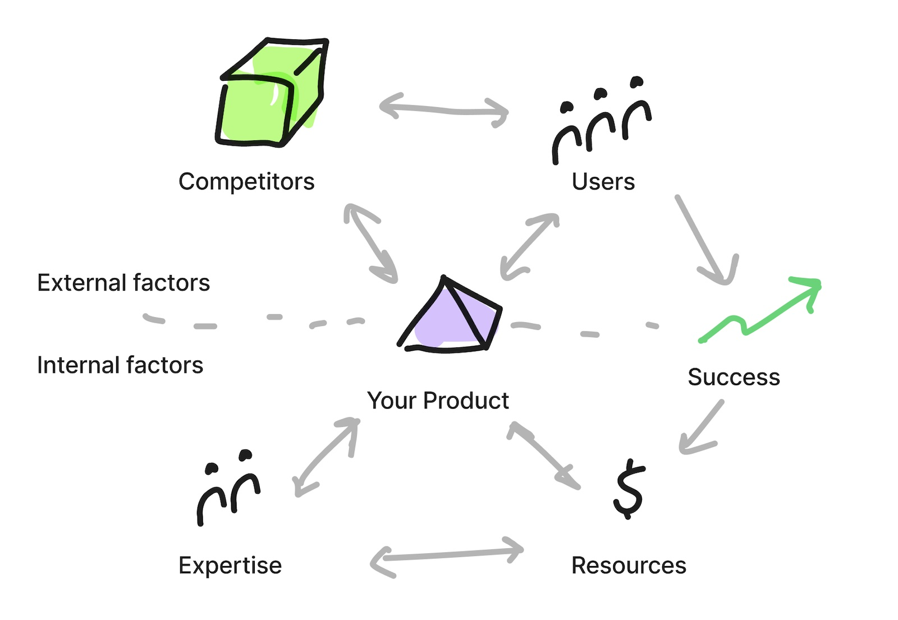

How to build a great product?
Turning Purpose into Practice
Key Questions for Building Your Product Strategy
Strategy takes your product's purpose to practice. Your product strategy should answer at least the following
questions: Why should your customers care about your product? Who are those customers? How does your product
fill the gaps in the market? How will you measure success? What do you need to build and do you have the
expertise and resources you need in order to build that? How do you validate what you are building is
taking you towards the desired outcomes and towards success?

Key Takeaways
Start from the outcomes and keep the focus purely on the value you want to provide.
Align your your users' success to your product's success. When your product enters
the market, competitors are likely to react and hence the market is constantly evolving.
Make sure you have the expertise and resources to constantly deliver value unattainable
with the competitors' products.
Inspiration and Further Reading:
- Shape Up: Stop Running in Circles and Ship Work that Matters by Ryan Singer
- Hooked: How to Build Habit-Forming Products by Nir Eyal
- The North Star Playbook: The guide to discovering your product's North Star by Amplitude
- Radical Focus: Achieving Your Most Important Goals with Objectives and Key Results by Christina R. Wodtke